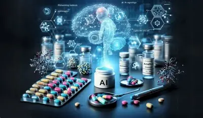
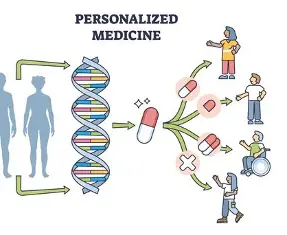

WORLDWIDE DEVELOPMENTS
Artificial Intelligence is transforming healthcare research around the world. It is helping scientists investigate potential medicines, understand diseases, and develop more personalized treatment approaches.
WORLDWIDE INNOVATIONS

AI can analyze chemical compounds and biological data to help researchers identify promising drug candidates for further testing.

AI can help analyze genetic and medical information to support treatment decisions tailored to individual patients.
Machine learning can help scientists examine large research datasets and identify patterns that may support medical discoveries.
AI systems can analyze health information to help identify patterns associated with certain diseases and health risks.
GLOBAL IMPACT
AI is creating new opportunities for healthcare research across the world. Researchers are exploring how these technologies can improve the process of discovering medicines, studying diseases, and understanding individual health needs. However, AI-generated results still require scientific testing, medical review, and careful evaluation before they can be used in healthcare.
FURTHER READING
Learn about artificial intelligence in healthcare.
Visit WHO Digital Health